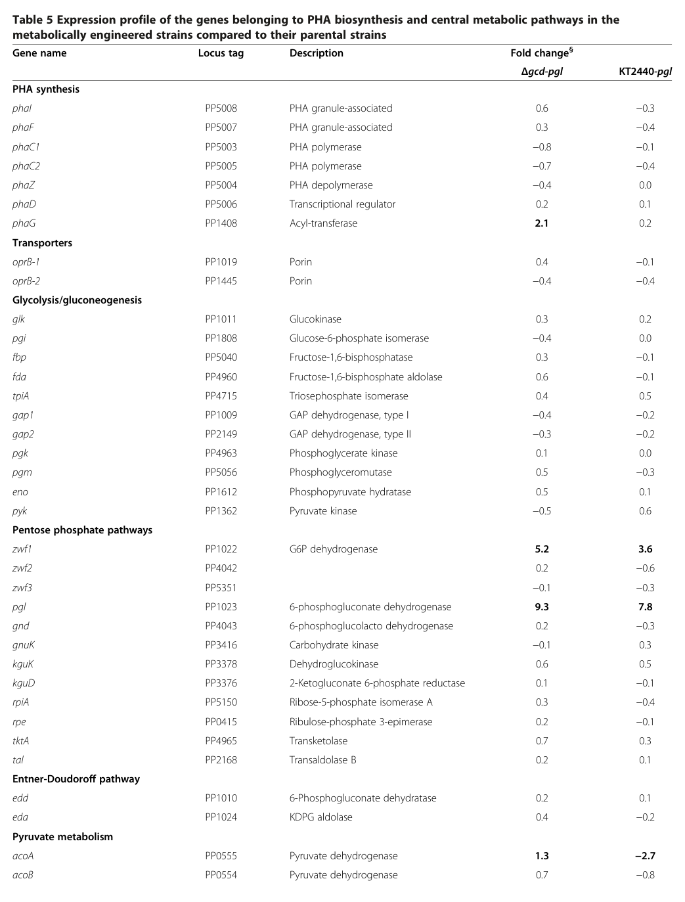

Phosphoenolpyruvate carboxylase (PEPC/PEPCase; EC 4.1.1.31), a soluble cytosolic enzyme of the PEPCase type 1 family. It catalyzes the essentially irreversible, Mg2+-dependent carboxylation of phosphoenolpyruvate (PEP) using bicarbonate (hydrogencarbonate) to form oxaloacetate (OAA) and inorganic phosphate. In bacterial central carbon metabolism PEPC functions as an anaplerotic enzyme that replenishes oxaloacetate at the PEP-pyruvate-oxaloacetate node, supplying the tricarboxylic acid cycle and biosynthetic precursor pools (e.g., the aspartate family of amino acids) when TCA intermediates are withdrawn. Bacterial PEPCs are typically homotetramers subject to allosteric regulation, commonly activated by acetyl-CoA and fructose-1,6-bisphosphate and inhibited by aspartate and malate, allowing anaplerotic OAA formation to be tuned to glycolytic and biosynthetic demand.
| GO Term | Evidence | Action | Reason |
|---|---|---|---|
|
GO:0000287
magnesium ion binding
|
IEA
GO_REF:0000104 |
ACCEPT |
Summary: PEPC requires Mg2+ as a catalytic cofactor; the UniProt record lists Mg(2+) as the cofactor (HAMAP MF_00595). Correct molecular function for this enzyme.
Reason: Mg2+ is the established divalent metal cofactor of PEPCase type 1 enzymes, consistent with the conserved active-site residues and the family assignment.
|
|
GO:0005829
cytosol
|
IEA
GO_REF:0000118 |
ACCEPT |
Summary: PEPC is a soluble enzyme of central carbon metabolism with no membrane or signal/transit-peptide features; cytosolic localization is the expected and consistent assignment.
Reason: Consistent with the soluble enzyme class and TreeGrafter/PANTHER family inference; bacterial PEPC has no localization signals and acts in the cytoplasm.
|
|
GO:0006099
tricarboxylic acid cycle
|
IEA
GO_REF:0000002 |
MARK AS OVER ANNOTATED |
Summary: PEPC is an anaplerotic enzyme that replenishes oxaloacetate feeding the TCA cycle, but it is not itself a reaction of the TCA cycle. The PEP->OAA carboxylation is an anaplerotic/CO2-fixation step at the PEP-pyruvate-OAA node, not a cyclic TCA reaction. This InterPro2GO inference over-states the role.
Reason: PEPC supports TCA cycle function anaplerotically but does not participate in the cycle's reactions; the more precise process annotations (oxaloacetate metabolic process, carbon fixation) better capture the actual role.
|
|
GO:0006107
oxaloacetate metabolic process
|
IEA
GO_REF:0000104 |
ACCEPT |
Summary: PEPC directly produces oxaloacetate from PEP, so participation in the oxaloacetate metabolic process is well supported and captures the core anaplerotic role.
Reason: The catalytic product is oxaloacetate; this is a direct and accurate process annotation for an anaplerotic PEPC.
|
|
GO:0008964
phosphoenolpyruvate carboxylase activity
|
IEA
GO_REF:0000120 |
ACCEPT |
Summary: This is the defining molecular function of the gene product (EC 4.1.1.31, RHEA:28370). Supported by the HAMAP rule, conserved active-site residues (His137, His542 region), and PEPCase type 1 family membership.
Reason: Core catalytic activity of PEPC; carboxylation of PEP with bicarbonate to yield oxaloacetate and phosphate. Represents the primary function of the gene.
Supporting Evidence:
file:PSEPK/ppc/ppc-deep-research-falcon.md
PEPC catalyzes PEP + HCO3- -> oxaloacetate + Pi, an essentially irreversible anaplerotic carboxylation at the PEP-pyruvate-oxaloacetate node (deep research; ppc-deep-research-falcon.md).
|
|
GO:0015977
carbon fixation
|
IEA
GO_REF:0000120 |
ACCEPT |
Summary: PEPC fixes inorganic carbon (bicarbonate) into an organic compound (oxaloacetate), the molecular event underlying anaplerotic CO2/bicarbonate assimilation. The UniProt keyword "Carbon dioxide fixation" applies. This is heterotrophic anaplerotic carbon fixation rather than autotrophic primary production, but the term is appropriate.
Reason: The carboxylation reaction incorporates inorganic bicarbonate carbon into central metabolism, an accurate (if broad) description of the process.
|
Q: Has the allosteric regulation of P. putida KT2440 Ppc (e.g., activation by acetyl-CoA/fructose-1,6-bisphosphate, inhibition by aspartate/malate) been measured directly, or is it inferred from E. coli/C. glutamicum homologs?
Experiment: Determine kinetic parameters (Km for PEP and bicarbonate, kcat) and Mg2+ dependence of purified KT2440 Ppc, and test the effect of candidate effectors (acetyl-CoA, fructose-1,6-bisphosphate, aspartate, malate).
Experiment: Characterize a ppc deletion/overexpression strain for growth phenotypes and 13C-fluxomics of anaplerotic OAA supply on different carbon sources.
The research report should be a detailed narrative explaining the function, biological processes, and localization of the gene product. Citations should be given for all claims.
You should prioritize authoritative reviews and primary scientific literature when conducting research. You can supplement
this with annotations you find in gene/protein databases, but these can be outdated or inaccurate.
We are specifically interested in the primary function of the gene - for enzymes, what reaction is catalyzed, and what is the substrate specificity? For transporters, what is the substrate? For structural proteins or adapters, what is the broader structural role? For signaling molecules, what is the role in the pathway.
We are interested in where in or outside the cell the gene product carries out its function.
We are also interested in the signaling or biochemical pathways in which the gene functions. We are less interested in broad pleiotropic effects, except where these elucidate the precise role.
Include evidence where possible. We are interested in both experimental evidence as well as inference from structure, evolution, or bioinformatic analysis. Precise studies should be prioritized over high-throughput, where available.
The UniProt target Q88MR4 is annotated as phosphoenolpyruvate carboxylase (PEPC/Ppc; EC 4.1.1.31) encoded by ppc and mapped to the ordered locus PP_1505 in Pseudomonas putida KT2440. This mapping is supported by KT2440 transcriptomics tables in a peer‑reviewed study, where ppc is explicitly listed as “Phosphoenolpyruvate carboxylase” with locus tag PP1505. (acuna2014productionofmedium pages 9-10, acuna2014productionofmedium pages 10-12)
Because the symbol ppc can refer to different genes in other organisms, only literature explicitly addressing phosphoenolpyruvate carboxylase (EC 4.1.1.31) and/or explicitly mapping to PP_1505 (or clearly to Ppc/PEPC at the PEP–OAA node) is used here. (koendjbiharie2021thepeppyruvateoxaloacetatenode pages 6-6, acuna2014productionofmedium pages 9-10)
Phosphoenolpyruvate carboxylase (PEPC/Ppc; EC 4.1.1.31) catalyzes the carboxylation of phosphoenolpyruvate (PEP) using bicarbonate, producing oxaloacetate (OAA) and inorganic phosphate:
This reaction is described as highly exergonic (ΔrG′m reported) and effectively irreversible under physiological conditions, functioning as a major route of bicarbonate fixation into central carbon metabolism to generate OAA. (koendjbiharie2021thepeppyruvateoxaloacetatenode pages 6-6)
In bacterial central carbon metabolism, OAA is a key entry point into the TCA cycle and also a precursor for biosynthesis (e.g., aspartate family amino acids). Accordingly, PEPC/Ppc is widely treated as an anaplerotic enzyme replenishing OAA when TCA cycle intermediates are drained for biosynthesis. (yin2024recentadvancesin pages 2-4, yin2024recentadvancesin pages 1-2)
Reviews of the PEP–pyruvate–oxaloacetate (PPO/POP) node emphasize that flux partitioning among PEP, pyruvate, and OAA is central to bacterial growth, energetics, and precursor supply. In this context, PEPC/Ppc provides a direct anaplerotic connection from PEP to OAA. (koendjbiharie2021thepeppyruvateoxaloacetatenode pages 6-6, yin2024recentadvancesin pages 1-2)
Bacterial PEPCs commonly exhibit multi-effector allostery. In the bacterial PEPC regulatory scheme summarized in a PPO-node review:
These effectors integrate glycolytic state (F1,6BP), acetyl‑CoA availability, and product/branchpoint signals (aspartate/malate) to tune anaplerotic OAA formation. (koendjbiharie2021thepeppyruvateoxaloacetatenode pages 6-7)
A 2024 review focused on engineering the POP node likewise summarizes that PEPC is activated by acetyl‑CoA and fructose‑1,6‑bisphosphate and inhibited by aspartate and malate in model bacteria (e.g., E. coli and C. glutamicum), underscoring conservation of this regulation logic across bacteria. (yin2024recentadvancesin pages 2-4)
Implication for KT2440 (inference): given that KT2440 PP_1505 is annotated as a canonical bacterial PEPC/Ppc and belongs to the bacterial/plant-type PEPC family, these regulatory principles are a strong prior for KT2440 Ppc function, even though KT2440-specific biochemical effector measurements were not retrieved in the accessible text set. (koendjbiharie2021thepeppyruvateoxaloacetatenode pages 6-7, acuna2014productionofmedium pages 9-10)
In a KT2440 metabolic engineering study aimed at improving medium-chain-length polyhydroxyalkanoate (mcl-PHA) production from glucose, transcriptome profiling identified that “induction of the phosphoenolpyruvate carboxylase gene ppc was detected”, and the locus is explicitly referenced as PP_1505 in the discussion of pyruvate metabolism changes. (acuna2014productionofmedium pages 7-9)
Quantitatively, the same work reports PP_1505/ppc expression values in central metabolism gene-expression tables (engineered strains vs parental backgrounds). In Table 5, ppc (PP1505) fold changes are reported as 0.0 (Δgcd‑pgl) and 1.4 (KT2440‑pgl). (acuna2014productionofmedium pages 10-12)
Visual evidence for these tabulated values is available in the cropped Table 5 images. (acuna2014productionofmedium media e91fc827, acuna2014productionofmedium media d4d2fe46)
While ppc itself was not the engineered target in the mcl‑PHA study, the ppc induction occurred within strains engineered by pgl overexpression (and in some cases gcd deletion) and was discussed alongside rearrangements in pyruvate metabolism.
For two pgl-overexpressing strains, quantitative physiological outcomes were reported:
In this context, ppc induction is best interpreted as part of a broader central metabolism response (likely affecting anaplerosis and pyruvate/PEP balance) accompanying the engineered perturbations that changed redox and carbon partitioning. (acuna2014productionofmedium pages 7-9)
A 2024 Nature Communications study investigating “synthetically‑primed adaptation” of KT2440 to D‑xylose includes a central metabolism proteomics map where Ppc (phosphoenolpyruvate carboxylase) is annotated with a statistically significant log2 fold change of −1.01 (adjusted p ≤ 0.05), indicating decreased abundance in one of the reported comparisons. (dvorak2024syntheticallyprimedadaptationof pages 10-11)
This supports the view that Ppc abundance is condition-dependent in KT2440 during major metabolic rewiring (engineering + adaptive evolution), consistent with Ppc being an adjustable anaplerotic/POP-node lever rather than a constitutively fixed activity. (dvorak2024syntheticallyprimedadaptationof pages 10-11)
A 2024 review on engineering the POP node for amino acid production summarizes that PEPC is a key enzymatic “handle” to route carbon from PEP toward OAA and downstream products; it highlights conserved allosteric regulation (activation by acetyl‑CoA/F1,6BP; inhibition by malate/aspartate) and frames PEPC as a frequent target in metabolic engineering strategies when OAA supply is limiting. (yin2024recentadvancesin pages 2-4, yin2024recentadvancesin pages 1-2)
The 2024 KT2440 xylose adaptation study exemplifies a current trend: rather than focusing on single-enzyme characterization, it uses multi-level analysis (including proteomics) to interpret how central metabolism shifts under engineering and evolution. Within this systems context, Ppc abundance changes (log2FC −1.01) provide measurable evidence that anaplerotic routing via Ppc is remodeled under non-native substrate assimilation. (dvorak2024syntheticallyprimedadaptationof pages 10-11)
The mcl‑PHA production study provides a direct bioprocess/industrial biotechnology setting in which KT2440’s ppc responds transcriptionally during strain engineering on glucose, and reports quantitative growth and product-yield metrics in engineered strains. This supports functional annotation of ppc as part of the tunable central carbon module that influences precursor supply/redox balance for polymer synthesis (even when not directly engineered). (acuna2014productionofmedium pages 7-9)
Across bacterial systems, PEPC is repeatedly highlighted as a key intervention point for improving yields of PEP/OAA/pyruvate-derived products and rebalancing precursor supply, because it directly controls OAA replenishment from PEP and therefore impacts the TCA cycle and biosynthetic precursor pools. (yin2024recentadvancesin pages 2-4, yin2024recentadvancesin pages 1-2)
Two convergent review-level perspectives underpin the most confident functional annotation statements for KT2440 PP_1505 Ppc:
For KT2440 specifically, these general principles are strengthened by direct condition-dependent transcription/protein-abundance evidence for PP_1505/ppc, consistent with the gene functioning at a regulated metabolic bottleneck rather than a peripheral pathway. (acuna2014productionofmedium pages 7-9, dvorak2024syntheticallyprimedadaptationof pages 10-11)
A compact quantitative summary is provided in the table below.
| Claim/Parameter | Value/Observation | Organism/Context | Source (first author year) | URL | Evidence citation id |
|---|---|---|---|---|---|
| Target identity | ppc / PP_1505 / UniProt Q88MR4 annotated as phosphoenolpyruvate carboxylase (PEPC/Ppc; EC 4.1.1.31) | Pseudomonas putida KT2440; transcriptomics tables list locus as PP1505 under pyruvate metabolism | Acuña 2014 | https://doi.org/10.1186/1475-2859-13-88 | (acuna2014productionofmedium pages 9-10, acuna2014productionofmedium pages 10-12) |
| Reaction stoichiometry | Phosphoenolpyruvate + HCO3- ⇌ oxaloacetate + Pi; described as an essentially irreversible bicarbonate-fixation reaction in vivo | Bacterial/plant-type PEPC general biochemistry | Koendjbiharie 2021 | https://doi.org/10.1093/femsre/fuaa061 | (koendjbiharie2021thepeppyruvateoxaloacetatenode pages 6-6) |
| Core function | Produces oxaloacetate (OAA) from PEP, supplying the PEP-pyruvate-oxaloacetate node | General bacterial central metabolism | Yin 2024 | https://doi.org/10.3390/molecules29122893 | (yin2024recentadvancesin pages 1-2) |
| Biological role | Anaplerotic enzyme that replenishes the TCA cycle by converting PEP to OAA | Bacteria including E. coli and Corynebacterium glutamicum; relevant inference for KT2440 Ppc family member | Yin 2024 | https://doi.org/10.3390/molecules29122893 | (yin2024recentadvancesin pages 2-4, yin2024recentadvancesin pages 1-2) |
| Typical bacterial activators | Fructose-1,6-bisphosphate and acetyl-CoA activate bacterial PEPC | General bacterial PEPC regulation | Koendjbiharie 2021 | https://doi.org/10.1093/femsre/fuaa061 | (koendjbiharie2021thepeppyruvateoxaloacetatenode pages 6-7) |
| Typical bacterial inhibitors | Aspartate and malate inhibit bacterial PEPC | General bacterial PEPC regulation | Koendjbiharie 2021 | https://doi.org/10.1093/femsre/fuaa061 | (yin2024recentadvancesin pages 2-4, koendjbiharie2021thepeppyruvateoxaloacetatenode pages 6-7) |
| KT2440 transcriptomic observation | ppc induction detected in engineered KT2440 with pgl overexpression; discussed as part of altered pyruvate metabolism | P. putida KT2440 engineering study on mcl-PHA production | Acuña 2014 | https://doi.org/10.1186/1475-2859-13-88 | (acuna2014productionofmedium pages 7-9) |
| KT2440 Table 4 value | ppc (PP1505) expression values reported as 0.5 and 0.4; table note indicates these entries were not bolded (not marked as differentiated expression in that table) | P. putida KT2440 engineered strains vs parental strains | Acuña 2014 | https://doi.org/10.1186/1475-2859-13-88 | (acuna2014productionofmedium pages 9-10) |
| KT2440 Table 5 values | ppc (PP1505) fold-change values reported as 0.0 for Δgcd-pgl and 1.4 for KT2440-pgl | P. putida KT2440 engineered strains vs parental strains | Acuña 2014 | https://doi.org/10.1186/1475-2859-13-88 | (acuna2014productionofmedium pages 10-12) |
| Localization inference | No organism-specific localization data were retrieved here; as a canonical bacterial PEPC in central carbon metabolism, Ppc is most consistently interpreted as a cytosolic enzyme rather than membrane or secreted | Inference from enzyme class and pathway role; direct KT2440 localization evidence not retrieved in cited contexts | Koendjbiharie 2021; Yin 2024 | https://doi.org/10.1093/femsre/fuaa061 ; https://doi.org/10.3390/molecules29122893 | (koendjbiharie2021thepeppyruvateoxaloacetatenode pages 6-6, yin2024recentadvancesin pages 1-2) |
Table: This table compiles the key functional-annotation facts for Pseudomonas putida KT2440 ppc/PP_1505, including the PEPC reaction, anaplerotic role, canonical bacterial regulation, and KT2440-specific transcriptomic observations from Acuña et al. 2014.
Key primary quantitative points (KT2440):
Direct KT2440 experimental localization data were not retrieved in the accessible corpus. However, given that Ppc/PEPC catalyzes a soluble central carbon reaction (PEP carboxylation to OAA) and is discussed as part of cytosolic metabolic network models and node reviews, the most consistent interpretation is that KT2440 Ppc is a cytosolic enzyme participating in central metabolism rather than a membrane or secreted protein (inference consistent with enzyme class and pathway location). (koendjbiharie2021thepeppyruvateoxaloacetatenode pages 6-6, yin2024recentadvancesin pages 1-2)
Despite strong support for core function and regulation logic from authoritative reviews, the following KT2440-specific details were not obtained from the current retrieved full texts and therefore should be treated as not yet evidenced for this specific protein:
Recommended next retrieval targets would include (i) KT2440-specific biochemical characterization papers of PEPC/Ppc (if available), and (ii) KT2440 genome-scale model/fluxomics studies that explicitly quantify the Ppc anaplerotic flux or examine ppc deletion.
References
(acuna2014productionofmedium pages 9-10): José Manuel Borrero-de Acuña, Agata Bielecka, Susanne Häussler, Max Schobert, Martina Jahn, Christoph Wittmann, Dieter Jahn, and Ignacio Poblete-Castro. Production of medium chain length polyhydroxyalkanoate in metabolic flux optimized pseudomonas putida. Microbial Cell Factories, 13:88-88, Jun 2014. URL: https://doi.org/10.1186/1475-2859-13-88, doi:10.1186/1475-2859-13-88. This article has 150 citations and is from a peer-reviewed journal.
(acuna2014productionofmedium pages 10-12): José Manuel Borrero-de Acuña, Agata Bielecka, Susanne Häussler, Max Schobert, Martina Jahn, Christoph Wittmann, Dieter Jahn, and Ignacio Poblete-Castro. Production of medium chain length polyhydroxyalkanoate in metabolic flux optimized pseudomonas putida. Microbial Cell Factories, 13:88-88, Jun 2014. URL: https://doi.org/10.1186/1475-2859-13-88, doi:10.1186/1475-2859-13-88. This article has 150 citations and is from a peer-reviewed journal.
(koendjbiharie2021thepeppyruvateoxaloacetatenode pages 6-6): Jeroen G Koendjbiharie, Richard van Kranenburg, and Servé W M Kengen. The pep-pyruvate-oxaloacetate node: variation at the heart of metabolism. FEMS Microbiology Reviews, Dec 2021. URL: https://doi.org/10.1093/femsre/fuaa061, doi:10.1093/femsre/fuaa061. This article has 79 citations and is from a domain leading peer-reviewed journal.
(yin2024recentadvancesin pages 2-4): Lianghong Yin, Yanan Zhou, Nana Ding, and Yu Fang. Recent advances in metabolic engineering for the biosynthesis of phosphoenol pyruvate–oxaloacetate–pyruvate-derived amino acids. Molecules, 29:2893, Jun 2024. URL: https://doi.org/10.3390/molecules29122893, doi:10.3390/molecules29122893. This article has 14 citations.
(yin2024recentadvancesin pages 1-2): Lianghong Yin, Yanan Zhou, Nana Ding, and Yu Fang. Recent advances in metabolic engineering for the biosynthesis of phosphoenol pyruvate–oxaloacetate–pyruvate-derived amino acids. Molecules, 29:2893, Jun 2024. URL: https://doi.org/10.3390/molecules29122893, doi:10.3390/molecules29122893. This article has 14 citations.
(koendjbiharie2021thepeppyruvateoxaloacetatenode pages 6-7): Jeroen G Koendjbiharie, Richard van Kranenburg, and Servé W M Kengen. The pep-pyruvate-oxaloacetate node: variation at the heart of metabolism. FEMS Microbiology Reviews, Dec 2021. URL: https://doi.org/10.1093/femsre/fuaa061, doi:10.1093/femsre/fuaa061. This article has 79 citations and is from a domain leading peer-reviewed journal.
(acuna2014productionofmedium pages 7-9): José Manuel Borrero-de Acuña, Agata Bielecka, Susanne Häussler, Max Schobert, Martina Jahn, Christoph Wittmann, Dieter Jahn, and Ignacio Poblete-Castro. Production of medium chain length polyhydroxyalkanoate in metabolic flux optimized pseudomonas putida. Microbial Cell Factories, 13:88-88, Jun 2014. URL: https://doi.org/10.1186/1475-2859-13-88, doi:10.1186/1475-2859-13-88. This article has 150 citations and is from a peer-reviewed journal.
(acuna2014productionofmedium media e91fc827): José Manuel Borrero-de Acuña, Agata Bielecka, Susanne Häussler, Max Schobert, Martina Jahn, Christoph Wittmann, Dieter Jahn, and Ignacio Poblete-Castro. Production of medium chain length polyhydroxyalkanoate in metabolic flux optimized pseudomonas putida. Microbial Cell Factories, 13:88-88, Jun 2014. URL: https://doi.org/10.1186/1475-2859-13-88, doi:10.1186/1475-2859-13-88. This article has 150 citations and is from a peer-reviewed journal.
(acuna2014productionofmedium media d4d2fe46): José Manuel Borrero-de Acuña, Agata Bielecka, Susanne Häussler, Max Schobert, Martina Jahn, Christoph Wittmann, Dieter Jahn, and Ignacio Poblete-Castro. Production of medium chain length polyhydroxyalkanoate in metabolic flux optimized pseudomonas putida. Microbial Cell Factories, 13:88-88, Jun 2014. URL: https://doi.org/10.1186/1475-2859-13-88, doi:10.1186/1475-2859-13-88. This article has 150 citations and is from a peer-reviewed journal.
(dvorak2024syntheticallyprimedadaptationof pages 10-11): Pavel Dvořák, Barbora Burýšková, Barbora Popelářová, Birgitta Elisabeth Ebert, Tibor Botka, Dalimil Bujdoš, Alberto Sánchez-Pascuala, Hannah Schöttler, Heiko Hayen, Víctor de Lorenzo, Lars M. Blank, and Martin Benešík. Synthetically-primed adaptation of pseudomonas putida to a non-native substrate d-xylose. Nature Communications, Mar 2024. URL: https://doi.org/10.1038/s41467-024-46812-9, doi:10.1038/s41467-024-46812-9. This article has 37 citations and is from a highest quality peer-reviewed journal.

id: Q88MR4
gene_symbol: ppc
product_type: PROTEIN
status: DRAFT
taxon:
id: NCBITaxon:160488
label: Pseudomonas putida (strain ATCC 47054 / DSM 6125 / CFBP 8728 / NCIMB 11950 / KT2440)
description: Phosphoenolpyruvate carboxylase (PEPC/PEPCase; EC 4.1.1.31), a soluble cytosolic enzyme of the PEPCase type 1 family. It catalyzes the essentially irreversible, Mg2+-dependent carboxylation of phosphoenolpyruvate (PEP) using bicarbonate (hydrogencarbonate) to form oxaloacetate (OAA) and inorganic phosphate. In bacterial central carbon metabolism PEPC functions as an anaplerotic enzyme that replenishes oxaloacetate at the PEP-pyruvate-oxaloacetate node, supplying the tricarboxylic acid cycle and biosynthetic precursor pools (e.g., the aspartate family of amino acids) when TCA intermediates are withdrawn. Bacterial PEPCs are typically homotetramers subject to allosteric regulation, commonly activated by acetyl-CoA and fructose-1,6-bisphosphate and inhibited by aspartate and malate, allowing anaplerotic OAA formation to be tuned to glycolytic and biosynthetic demand.
existing_annotations:
- term:
id: GO:0000287
label: magnesium ion binding
evidence_type: IEA
original_reference_id: GO_REF:0000104
qualifier: enables
review:
summary: PEPC requires Mg2+ as a catalytic cofactor; the UniProt record lists Mg(2+) as the cofactor (HAMAP MF_00595). Correct molecular function for this enzyme.
action: ACCEPT
reason: Mg2+ is the established divalent metal cofactor of PEPCase type 1 enzymes, consistent with the conserved active-site residues and the family assignment.
- term:
id: GO:0005829
label: cytosol
evidence_type: IEA
original_reference_id: GO_REF:0000118
qualifier: located_in
review:
summary: PEPC is a soluble enzyme of central carbon metabolism with no membrane or signal/transit-peptide features; cytosolic localization is the expected and consistent assignment.
action: ACCEPT
reason: Consistent with the soluble enzyme class and TreeGrafter/PANTHER family inference; bacterial PEPC has no localization signals and acts in the cytoplasm.
- term:
id: GO:0006099
label: tricarboxylic acid cycle
evidence_type: IEA
original_reference_id: GO_REF:0000002
qualifier: involved_in
review:
summary: PEPC is an anaplerotic enzyme that replenishes oxaloacetate feeding the TCA cycle, but it is not itself a reaction of the TCA cycle. The PEP->OAA carboxylation is an anaplerotic/CO2-fixation step at the PEP-pyruvate-OAA node, not a cyclic TCA reaction. This InterPro2GO inference over-states the role.
action: MARK_AS_OVER_ANNOTATED
reason: PEPC supports TCA cycle function anaplerotically but does not participate in the cycle's reactions; the more precise process annotations (oxaloacetate metabolic process, carbon fixation) better capture the actual role.
- term:
id: GO:0006107
label: oxaloacetate metabolic process
evidence_type: IEA
original_reference_id: GO_REF:0000104
qualifier: involved_in
review:
summary: PEPC directly produces oxaloacetate from PEP, so participation in the oxaloacetate metabolic process is well supported and captures the core anaplerotic role.
action: ACCEPT
reason: The catalytic product is oxaloacetate; this is a direct and accurate process annotation for an anaplerotic PEPC.
- term:
id: GO:0008964
label: phosphoenolpyruvate carboxylase activity
evidence_type: IEA
original_reference_id: GO_REF:0000120
qualifier: enables
review:
summary: This is the defining molecular function of the gene product (EC 4.1.1.31, RHEA:28370). Supported by the HAMAP rule, conserved active-site residues (His137, His542 region), and PEPCase type 1 family membership.
action: ACCEPT
reason: Core catalytic activity of PEPC; carboxylation of PEP with bicarbonate to yield oxaloacetate and phosphate. Represents the primary function of the gene.
supported_by:
- reference_id: file:PSEPK/ppc/ppc-deep-research-falcon.md
supporting_text: PEPC catalyzes PEP + HCO3- -> oxaloacetate + Pi, an essentially irreversible anaplerotic carboxylation at the PEP-pyruvate-oxaloacetate node (deep research; ppc-deep-research-falcon.md).
- term:
id: GO:0015977
label: carbon fixation
evidence_type: IEA
original_reference_id: GO_REF:0000120
qualifier: involved_in
review:
summary: PEPC fixes inorganic carbon (bicarbonate) into an organic compound (oxaloacetate), the molecular event underlying anaplerotic CO2/bicarbonate assimilation. The UniProt keyword "Carbon dioxide fixation" applies. This is heterotrophic anaplerotic carbon fixation rather than autotrophic primary production, but the term is appropriate.
action: ACCEPT
reason: The carboxylation reaction incorporates inorganic bicarbonate carbon into central metabolism, an accurate (if broad) description of the process.
core_functions:
- description: Catalyzes the Mg2+-dependent, essentially irreversible carboxylation of phosphoenolpyruvate with bicarbonate to form oxaloacetate and inorganic phosphate, serving as an anaplerotic enzyme that replenishes the oxaloacetate pool of the TCA cycle and central biosynthesis at the PEP-pyruvate-oxaloacetate node.
molecular_function:
id: GO:0008964
label: phosphoenolpyruvate carboxylase activity
supported_by:
- reference_id: GO_REF:0000120
supporting_text: EC 4.1.1.31; RHEA:28370 oxaloacetate + phosphate = phosphoenolpyruvate + hydrogencarbonate; HAMAP MF_00595 PEPCase type 1.
directly_involved_in:
- id: GO:0006107
label: oxaloacetate metabolic process
- id: GO:0015977
label: carbon fixation
references:
- id: GO_REF:0000002
title: Gene Ontology annotation through association of InterPro records with GO terms
findings: []
- id: GO_REF:0000104
title: Electronic Gene Ontology annotations created by transferring manual GO annotations between related proteins based on shared sequence features
findings: []
- id: GO_REF:0000118
title: TreeGrafter-generated GO annotations
findings: []
- id: GO_REF:0000120
title: Combined Automated Annotation using Multiple IEA Methods
findings: []
- id: PMID:12534463
title: Complete genome sequence and comparative analysis of the metabolically versatile Pseudomonas putida KT2440.
findings: []
reference_review:
relevance: MEDIUM
correctness: VERIFIED
review_notes: Genome sequence/annotation paper for KT2440 that defines locus PP_1505 (ppc). Verified via the UniProt record cross-reference (PubMed 12534463).
- id: PMID:33289792
title: "The PEP-pyruvate-oxaloacetate node: variation at the heart of metabolism."
findings: []
reference_review:
relevance: HIGH
correctness: VERIFIED
review_notes: Authoritative review (Koendjbiharie et al., FEMS Microbiol Rev 2021, DOI 10.1093/femsre/fuaa061) cited for PEPC reaction stoichiometry, irreversibility, and conserved bacterial allosteric regulation. The previously listed PMID:34849727 was a wrong/hallucinated identifier (resolves to an unrelated paediatric cardiology paper); corrected to PMID:33289792, verified via DOI-to-PMID lookup and PubMed (title and abstract match the PPO-node review). The paraphrased supporting_text was re-anchored to the deep-research file since it is a report paraphrase, not a verbatim abstract quote.
suggested_questions:
- question: Has the allosteric regulation of P. putida KT2440 Ppc (e.g., activation by acetyl-CoA/fructose-1,6-bisphosphate, inhibition by aspartate/malate) been measured directly, or is it inferred from E. coli/C. glutamicum homologs?
suggested_experiments:
- description: Determine kinetic parameters (Km for PEP and bicarbonate, kcat) and Mg2+ dependence of purified KT2440 Ppc, and test the effect of candidate effectors (acetyl-CoA, fructose-1,6-bisphosphate, aspartate, malate).
- description: Characterize a ppc deletion/overexpression strain for growth phenotypes and 13C-fluxomics of anaplerotic OAA supply on different carbon sources.
{kind=link}